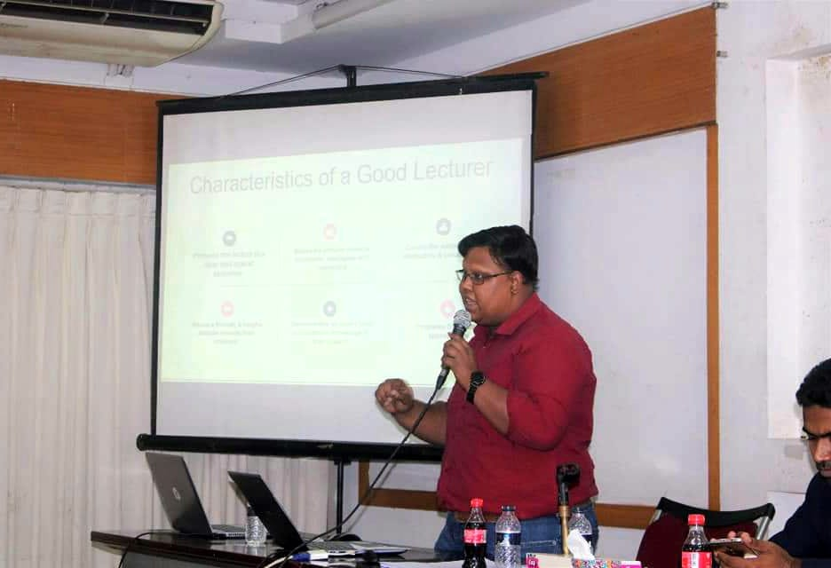

Everything writers, editors, and event organizers need in one place - bios, photos, talking points, audience reach, and booking contacts. Please feel free to use the materials below; for anything else, just get in touch.
Copy whichever length fits your format. Please use them as-is where possible.
Dr. Nazif Mahbub is a physician-trained public health specialist, policy analyst, and personal development coach based in Edmonton, Canada. He is the founder of Active Action Lab, host of the Active Action Podcast, and a Senior Policy Analyst with the Government of Alberta.
Dr. Nazif Mahbub (MBBS, MPH, CHE, PMP, FRSPH) is a physician-trained public health specialist, policy analyst, corporate trainer, speaker, and personal development coach. After earning his medical degree in Bangladesh and a Master of Public Health in Health Policy & Management from the University of Alberta, he became a Senior Policy Analyst with the Government of Alberta. He founded Active Action Lab and the Active Action Podcast, built a community of more than 190,000 followers, and helps individuals and organizations grow through evidence-based coaching, training, and speaking.
Dr. Nazif Mahbub's path began in Dhaka, Bangladesh, where he earned his MBBS from the University of Dhaka and practised as a physician. Drawn to the systems behind health rather than individual care alone, he immigrated to Canada through the Federal Skilled Worker pathway and completed a Master of Public Health in Health Policy & Management at the University of Alberta. He went on to earn the Certified Health Executive (CHE) designation, the Project Management Professional (PMP) certification, and a Fellowship of the Royal Society for Public Health (FRSPH), and today serves as a Senior Policy Analyst with the Government of Alberta. Alongside his public-service career, he founded Active Action Lab and the Active Action Podcast, co-founded Active Action Organization to support newcomers, and launched Pod Mechanic, a podcast production studio. Through coaching, corporate training, and speaking, he has reached a community of more than 190,000 people across 15+ countries - turning lived experience into practical tools for personal and professional growth.
Click to download. Please credit "Dr. Nazif Mahbub" where appropriate.
home-headshot.png

about-headshot.png
For interviews, contributed articles, podcast appearances, or speaking, Dr. Nazif and his team are happy to help.
Invite Dr. Nazif{kind=link}
{kind=link}